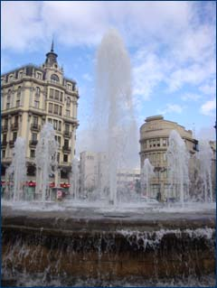

|
Начну с организации обучения. Много трудностей
у наших студентов вызывает составление своего расписания и состыковка
предметов по времени. Многие нужные предметы идут одновременно.
Испанские студенты практикуют следующее: приходят на первую половину
одной пары и вторую половину другой (и наоборот). Преподаватели
относятся к этому спокойно. Официально нет перерывов между парами,
но есть негласная традиция - приходить на 10-15 мин после начала
пары. Таким образом есть время отдохнуть и дойти до нужной аудитории
или корпуса. Отношения между преподавателями и студентами гораздо
менее формальные, чем в России. Почти все студенты обращаются к
преподавателям на «ты». Но лучше обращаться на «вы» – если что,
вас поправят.

Организация занятий зависит от преподавателя и предмета; в основном
это «лекция – семинар». Почти все задания выполняются в виде презентаций.
Материал преподается также в форме презентаций, плюс к этому преподаватели
оставляют ссылки на дополнительные источники. Система оценок – десятибалльная,
но многие преподаватели не ставят высшую оценку - «matricula de
honor», которая начинается с 9.5. В общем, и целом, уровень оценок
ниже, чем в России и остальной Европе, т.е. испанские преподаватели
оценивают более строго – об этом написано даже на сайте в гиде для
иностранных студентов. Многие преподаватели не делают разницы в
оценках между испанцами – носителями языка и иностранными студентами.
Экзамены проходят в письменной форме или в форме теста.
О жилье. Можно забронировать место в
общежитии. Плюсы в том, что там есть спортивный зал и интернет.
Минус – это дороже. Очень легко найти квартиру или комнату. Мы снимали
квартиру на 4 русских студентов, очень приличную и дешево. Но лучше
жить с иностранными студентами, чтобы все время говорить на испанском.
О культуре. Говорят что Испания это
страна вечного праздника. Да, это оказалось правдой. Испанцы очень
дружелюбные, шумные и общительные. С иностранными языками у них
непросто, поэтому если они слышат даже очень простую фразу по-испански
из ваших уст, то проявляют неподдельный интерес и симпатию.
Что нужно знать об Испании в первую очередь? Существует такое явление, как «marcha» – когда люди всех возрастов
выходят гулять, пройтись по барам, кафе, ресторанам, дискотекам.
Это называется «salir» – дословно «выходить». Начинается это часов
в 11-12 и продолжается до 3-4 часов утра, особо стойкие гуляют до
5-7 утра следующего дня. «Тапас» – другое популярное и уникальное
испанское явление, когда в барах (которых существует огромное множество),
вместе с бокалом вина или пива подается бесплатная закуска в виде
чего-нибудь вкусного и национального. «Ir de tapas», что значит
«пройтись по барам, чтобы попробовать закуски», - так проводят свой
досуг испанцы (и иностранные студенты), собираясь семьями или большими
компаниями.
Там где есть хотя бы два испанца, обязательно много шума – громкость
разговора выше, при этом сопровождается большим количеством жестов.
Дистанция между говорящими меньше, чем в России. Форма приветствия
– 2 поцелуя в щеку.
В нашем семестре было около 250 иностранных студентов в основном
из Европы и Латинской Америки, но больше всех бразильцев и итальянцев.
Каждый приезжает по разной программе, но не важно откуда ты – тебя
называют студентом ERASMUS. Обычно все «эрасмус» держатся вместе.
В итоге происходит культурный обмен не только с Испанией, но и с
остальными странами мира, знание по несколько слов из других языков,
национальных блюд и их рецептов, приглашения в гости.
Завершая свой краткий отчет хочу сказать, что для меня это был
бесценный опыт, который дал мне множество знаний о стране, с которой
я хочу связать свою профессиональную деятельность.
Лесина Вита, студентка ФМО
|